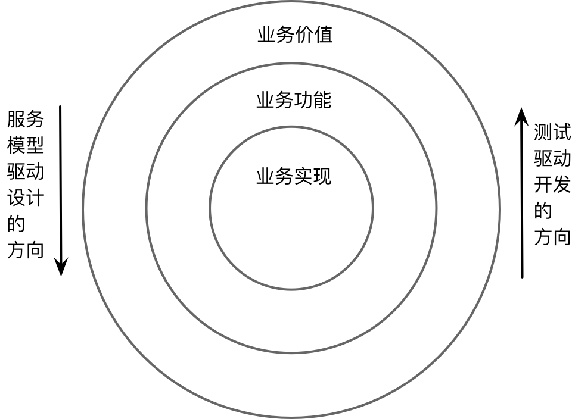
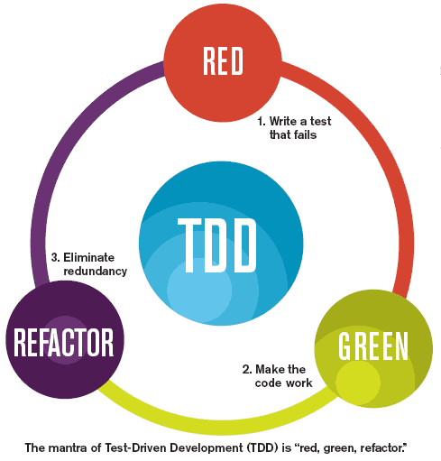
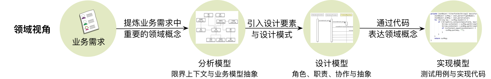

- 001 「战略篇」访谈 DDD 和微服务是什么关系？.md.html
- 002 「战略篇」开篇词：领域驱动设计，重焕青春的设计经典.md.html
- 003 领域驱动设计概览.md.html
- 004 深入分析软件的复杂度.md.html
- 005 控制软件复杂度的原则.md.html
- 006 领域驱动设计对软件复杂度的应对（上）.md.html
- 007 领域驱动设计对软件复杂度的应对（下）.md.html
- 008 软件开发团队的沟通与协作.md.html
- 009 运用领域场景分析提炼领域知识（上）.md.html
- 010 运用领域场景分析提炼领域知识（下）.md.html
- 011 建立统一语言.md.html
- 012 理解限界上下文.md.html
- 013 限界上下文的控制力（上）.md.html
- 014 限界上下文的控制力（下）.md.html
- 015 识别限界上下文（上）.md.html
- 016 识别限界上下文（下）.md.html
- 017 理解上下文映射.md.html
- 018 上下文映射的团队协作模式.md.html
- 019 上下文映射的通信集成模式.md.html
- 020 辨别限界上下文的协作关系（上）.md.html
- 021 辨别限界上下文的协作关系（下）.md.html
- 022 认识分层架构.md.html
- 023 分层架构的演化.md.html
- 024 领域驱动架构的演进.md.html
- 025 案例 层次的职责与协作关系（图文篇）.md.html
- 026 限界上下文与架构.md.html
- 027 限界上下文对架构的影响.md.html
- 028 领域驱动设计的代码模型.md.html
- 029 代码模型的架构决策.md.html
- 030 实践 先启阶段的需求分析.md.html
- 031 实践 先启阶段的领域场景分析（上）.md.html
- 032 实践 先启阶段的领域场景分析（下）.md.html
- 033 实践 识别限界上下文.md.html
- 034 实践 确定限界上下文的协作关系.md.html
- 035 实践 EAS 的整体架构.md.html
- 036 「战术篇」访谈：DDD 能帮开发团队提高设计水平吗？.md.html
- 037 「战术篇」开篇词：领域驱动设计的不确定性.md.html
- 038 什么是模型.md.html
- 039 数据分析模型.md.html
- 040 数据设计模型.md.html
- 041 数据模型与对象模型.md.html
- 042 数据实现模型.md.html
- 043 案例 培训管理系统.md.html
- 044 服务资源模型.md.html
- 045 服务行为模型.md.html
- 046 服务设计模型.md.html
- 047 领域模型驱动设计.md.html
- 048 领域实现模型.md.html
- 049 理解领域模型.md.html
- 050 领域模型与结构范式.md.html
- 051 领域模型与对象范式（上）.md.html
- 052 领域模型与对象范式（中）.md.html
- 053 领域模型与对象范式（下）.md.html
- 054 领域模型与函数范式.md.html
- 055 领域驱动分层架构与对象模型.md.html
- 056 统一语言与领域分析模型.md.html
- 057 精炼领域分析模型.md.html
- 058 彩色 UML 与彩色建模.md.html
- 059 四色建模法.md.html
- 060 案例 订单核心流程的四色建模.md.html
- 061 事件风暴与业务全景探索.md.html
- 062 事件风暴与领域分析建模.md.html
- 063 案例 订单核心流程的事件风暴.md.html
- 064 表达领域设计模型.md.html
- 065 实体.md.html
- 066 值对象.md.html
- 067 对象图与聚合.md.html
- 068 聚合设计原则.md.html
- 069 聚合之间的关系.md.html
- 070 聚合的设计过程.md.html
- 071 案例 培训领域模型的聚合设计.md.html
- 072 领域模型对象的生命周期-工厂.md.html
- 073 领域模型对象的生命周期-资源库.md.html
- 074 领域服务.md.html
- 075 案例 领域设计模型的价值.md.html
- 076 应用服务.md.html
- 077 场景的设计驱动力.md.html
- 078 案例 薪资管理系统的场景驱动设计.md.html
- 079 场景驱动设计与 DCI 模式.md.html
- 080 领域事件.md.html
- 081 发布者—订阅者模式.md.html
- 082 事件溯源模式.md.html
- 083 测试优先的领域实现建模.md.html
- 084 深入理解简单设计.md.html
- 085 案例 薪资管理系统的测试驱动开发（上）.md.html
- 086 案例 薪资管理系统的测试驱动开发（下）.md.html
- 087 对象关系映射（上）.md.html
- 088 对象关系映射（下）.md.html
- 089 领域模型与数据模型.md.html
- 090 领域驱动设计对持久化的影响.md.html
- 091 领域驱动设计体系.md.html
- 092 子领域与限界上下文.md.html
- 093 限界上下文的边界与协作.md.html
- 094 限界上下文之间的分布式通信.md.html
- 095 命令查询职责分离.md.html
- 096 分布式柔性事务.md.html
- 097 设计概念的统一语言.md.html
- 098 模型对象.md.html
- 099 领域驱动设计参考过程模型.md.html
- 100 领域驱动设计的精髓.md.html
- 101 实践 员工上下文的领域建模.md.html
- 102 实践 考勤上下文的领域建模.md.html
- 103 实践 项目上下文的领域建模.md.html
- 104 实践 培训上下文的业务需求.md.html
- 105 实践 培训上下文的领域分析建模.md.html
- 106 实践 培训上下文的领域设计建模.md.html
- 107 实践 培训上下文的领域实现建模.md.html
- 108 实践 EAS 系统的代码模型.md.html
- 109 后记：如何学习领域驱动设计.md.html
048 领域实现模型
实现模型与编码质量
领域设计模型体现了类的静态结构与动态协作，领域实现模型则进一步把领域知识与技术实现连接起来，但同时它必须守住二者之间的边界，保证业务与技术彼此隔离。这条边界线应由设计模型明确给出，其中的关键是遵循整洁架构、六边形架构与分层架构，做好基础设施层实现机制的抽象，即我在[《领域驱动设计实践（战略篇）》]中提到的“南向网关”的内容。这正好说明了领域分析模型、领域设计模型与领域实现模型之间的统一关系，前者往往会成为后者的基础。
我认为，测试驱动开发可以很好地满足将领域设计模型转换为领域实现模型的需求。注意，测试驱动开发并不等于是“测试先行”，也不能简单地将其视为一种编程手段。我理解的测试驱动开发（Test Driven Development，TDD）包含两个 TDD 阶段：
- 第一个阶段是任务分解驱动设计（Tasking Driven Design）：通过对用户故事进行任务分解，可以降低需求复杂度。这一过程恰好与职责驱动设计中对职责的分解相对应，实际上都是一种“分而治之”的思想。每个分解的任务或子任务皆以动宾短语的形式表达，这就相当于寻找到了各个需要履行的职责，以及履行职责的时序。因此，设计模型中的时序图可以作为测试驱动开发的重要输入。
- 第二个阶段是测试驱动开发：依照事先拆分好的任务，进一步结合业务场景将任务划分为多个可以验证的测试用例，然后开始编写测试，并按照红—绿—重构的节奏开始编码实现。
分解的任务是有层次的，大致可以划分为业务价值、业务功能与业务实现三个层次。这三个层次还可以进一步递归分解，这取决于业务场景的粒度。在选择测试要驱动的任务时，可以采用自外向内或自内向外这两种不同的实现方向。在建立领域设计模型时，我们往往会采用自外向内的方向，这其实就是前面讲解的服务模型驱动设计的设计方向，符合“意图导向编程”的思想。而在选择测试用例时，则应该反其道而行之，从最小粒度的原子任务开始，这样在一定程度上能减少不必要的 Mock 协作，也能够减少最外层服务因为分支覆盖率的原因带来的测试用例组合爆炸：

测试驱动开发严格遵循 Kent Beck 提出的简单设计原则，内容为：
- 通过所有测试（Passes its tests）
- 尽可能消除重复 (Minimizes duplication)
- 尽可能清晰表达 (Maximizes clarity)
- 更少代码元素 (Has fewer elements)
- 以上四个原则的重要程度依次降低
“通过所有测试”原则意味着我们开发的功能满足客户的需求，这是简单设计的底线原则。该原则同时隐含地告知与客户或领域专家（需求分析师）充分沟通的重要性。
“尽可能消除重复”原则是对代码质量提出的要求，并通过测试驱动开发的重构环节来完成。注意此原则提到的是 Minimizes（尽可能消除），而非 No duplication（无重复），因为追求极致的重用存在设计与编码的代价。
“尽可能清晰表达”原则要求代码要简洁而清晰地传递领域知识，在领域驱动设计的语境下，就是要遵循统一语言，提高代码的可读性，满足业务人员与开发人员的交流目的。针对核心领域，甚至可以考虑引入领域特定语言（Domain Specific Language，DSL）来表现领域逻辑。
在满足这三个原则的基础上，“更少代码元素”原则告诫我们遏制过度设计的贪心，做到设计的恰如其分，即在满足客户需求的基础上，只要代码已经做到了最少重复与清晰表达，就不要再进一步拆分或提取类、方法和变量。
这四个原则是依次递进的，功能正确、减少重复、代码可读是简单设计的根本要求。一旦满足这些要求，就不能创建更多的代码元素去迎合未来可能并不存在的变化，避免过度设计。当简单设计原则与测试驱动开发结合起来之后，测试保证了功能的正确性，重构则保证了代码的质量。由于有大量的测试保护，即使未来发生了变化，也能让开发人员在调整代码结构应对变化时充满信心。测试、实现与重构共同构成了测试驱动开发的核心：

图片来源于网络
重构既可以让领域实现模型满足统一语言的要求，并帮助我们发现隐含概念，又可以让我们的面向对象设计做得更好。玉不琢不成器，代码也需要不断地打磨，这个过程就是对代码坏味道的识别与消除，进而在重构的过程中，逐渐让我们的实现向着面向对象设计的范式靠拢。
例如，通过识别出“依恋情节（Feature Envy）”的坏味道，就可以结合提取方法（Extract Method）与移动方法（Move Method）等重构手法，将行为转移到拥有数据的模型对象上，避免了贫血模型。又例如识别出“过长参数列表（Long Parameter List）”的坏味道，就可以通过引入参数对象（Introduce Parameter Object）重构手法，获得在分析建模与设计建模中未曾发现的隐式领域概念。
在通过单元测试进行测试驱动开发时，我们强调单元测试的快速反馈。对于单元测试的定义，Michael Feathers 认为：运行快、不依赖于任何外部资源的测试就是单元测试。因此，如下所述的测试并非单元测试：
- 和数据库有交互
- 进行了网络间通信
- 调用了文件系统
- 需要你对环境做特定的准备（如编辑配置文件）才能运行的
这些职责恰好属于业务逻辑需要调用的所谓“南向网关”的部分，被放在整洁架构的最外侧一环，如下图所示的 DB、Devices 与 External Interfaces：
图片来源于网络
遵循整洁架构思想与依赖倒置原则（DIP），我们需要对这些职责进行抽象。该抽象正好对应于领域设计模型中的 Gateway 角色，即对“访问外部资源”行为的封装与抽象。在测试驱动开发中，这些职责可以利用类似 Mockito 这样的模拟框架对其进行模拟，使得我们在编写测试时，可以仅关注具体的业务逻辑，而忽略与外部资源的协作。这既符合测试驱动开发的原则，又能满足领域驱动设计将设计重心放在“领域”的要求，自然而然地做到了业务复杂度与技术复杂度的隔离。
运用测试驱动开发编写的测试代码也是组成领域实现模型的关键部分。前面提到，在测试驱动开发阶段，应根据“事先拆分好的任务，进一步结合业务场景将任务划分为多个可以验证的测试用例”，因此，这些测试用例都体现了具体的业务场景。我们的实践是以接近自然语言的形式定义测试方法，例如针对转账业务场景，划分的测试用例对应的测试方法可以定义为：
public class AccountTest {
@Test
public void should_report_InsufficientFundsException_given_not_enough_balance_of_source_account() {}
@Test
public void should_report_InvalidAccountException_given_invalid_destination_account() {}
@Test
public void should_transfer_from_src_account_to_dest_account_given_correct_transfer_amount() {}
}
每个测试方法只能做一件事情，而且每个测试方法都是独立的。
在编写测试方法时，还应遵循 Given-When-Then 模式。这种编写模式描述了测试的准备、期待的行为，以及相关的验收条件：
- Given：为要测试的方法提供准备，包括创建被测试对象，为调用方法准备输入参数实参等。
- When：调用被测试的方法，遵循 SRP 原则，在一个测试方法的 when 部分，应该只有一条语句对被测方法进行调用。
- Then：对调用后的结果进行预期验证。
例如：
@Test
public void should_transfer_from_src_account_to_dest_account_given_correct_transfer_amount() {
// given
Money balanceOfSrc = new Money(100_000L, Currency.RMB);
SourceAccount src = new Account(srcAccountId, balanceOfSrc);
Money balanceOfDes = new Money(0L, Currency.RMB);
DestinationAccount dest = new Account(destAccountId, balanceOfDes);
Money trasferAmount = new Money(10_000L, Currency.RMB);
// when
src.transferMoneyTo(dest, transferAmount);
// then
assertThat(src.getBalance().getFaceValue()).isEqualTo(90_000L);
assertThat(dest.getBalance().getFaceValue()).isEqualTo(10_000L);
}
这样的测试代码体现了领域逻辑，可以认为是领域实现模型的一部分。倘若在实现过程中，还能够结合规格说明（Specification）风格的验收测试，通过接近自然语言的领域特定语言编写测试用例场景，将用户故事、代码实现与测试用例三者结合起来，形成所谓的“活文档（Live Document）”。这样的活文档既能够促进团队与领域专家的沟通，又能真实地体现实现逻辑，是领域建模的重要实践，输出的同样是领域实现模型的一部分。
领域模型驱动设计的过程
整体而言，在领域模型驱动设计的语境下，领域分析模型从业务系统中抽象出核心的领域概念，与领域专家一起获得领域见解，并提炼出有价值的领域知识，从而建立一个有利于与领域专家沟通的抽象模型。领域分析模型与任何软件开发技术都没有关系，只取决于团队对领域知识的理解。
领域设计模型则是在领域分析模型基础上的技术演进，例如对领域分析模型中的领域对象进行职责分配，建立抽象接口完成模块以及对象之间的解耦，对代表领域概念的类进行更合理的封装，隐藏不必要的细节，并对领域分析模型中的领域对象运用 Eric Evans 提出的设计要素与模式。
领域实现模型提供遵循领域设计模型的编程实现，这时需要考虑具体的实现机制，但同时又必须保持业务复杂度与技术复杂度的分离，避免出现复杂度的叠加效应。当然，实现模型总是由编程语言来表示，不同语言有不同的惯用法、不同的语法糖，即使在相同语言下，选择不同的框架，由于框架的设计原则和思路亦有所不同，导致实现模型会有所区别。整个领域模型驱动设计的过程如下图所示：

在领域模型驱动设计过程中，是领域分析模型、领域设计模型与领域实现模型共同构成了领域模型，因此这里列出的三个模型并不是独立无关的，与之对应的建模活动也不是独立无关的。这三个模型是统一的整体，只是在不同的阶段需要有不同的分析建模方法，又因为交流的对象不同，需要有不同的模型呈现形式。因此，要掌握领域驱动设计，在战术设计层面就必须要理解什么才是真正的领域模型。